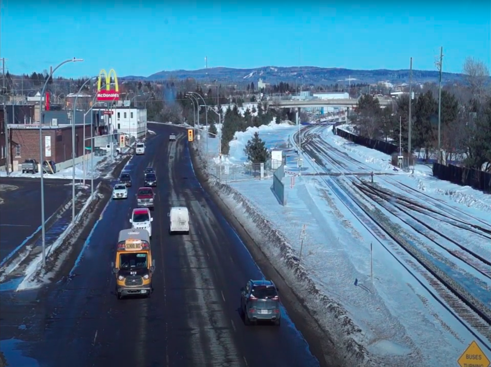

A brief description of the problem being dealt with, which includes -
the motivation behind the problem, background on the existing
approaches being used in this field of research, and some applications of this
project.
A brief description of the problem being dealt with, which includes -
the motivation behind the problem, background on the existing
approaches being used in this field of research, and some applications of this
project.
Abstract
The Unmanned Aerial Vehicles (UAVs) are rapidly emerging with their applications ranging from surveillance to disaster response.
One such area is real-time traffic monitoring where UAVs with their vision based
methods can play a significant role in streamlining traffic flow, mitigating
congestion and quick emergency response in accidents
(Liang Wang, Fangliang Chen, Huiming Yin, December 2016) However, such an
implementation is accompanied by challenges related to accuracy and computational
overload. Therefore, a comprehensive comparison of available methodologies in
computer vision is essential to determine the most effective approach for traffic
management tasks.
Introduction
Classical computer vision methods, which leverage inherent
image attributes such as texture, color, and shape, have been the mainstay for years.
Vehicles, with their distinct symmetrical shapes and unique colors, are
particularly amenable to these techniques. There are several traditional
computer vision methods that are being used in vehicle detection.
Researchers have used methods such as template matching and Haar cascade,
HOG based features, SIFT, ORB with classifiers like KNN, SVM to do
vehicle detection. While template matching provides good results,
Haar cascade is a better approach as it detects the objects by
detecting features. HOG and Haar cascades give competitive results.
Detected objects can be tracked with methods like Lucas-Kanade
optical flow, Kalman filter based SORT, mean-shift tracking.
These methods are mostly based on prediction of the next
probable position based on tracking features. On the other
hand, in deep learning based methods like RCNN, fast RCNN,
which is a two-stage method and one staged method like YOLO.
This research conducts a comparative analysis of traditional
computer vision
Both techniques exhibit limitations and
advantages
associated with hardware and software. While classical computer vision
methods struggle with occlusion and lighting problems, they serve well in terms of computation power. Machine learning based methods give robust solutions and are not affected by the surrounding environment. But they are highly dataset dependent and need a lot of computational capability to train huge models. The foundation of the proposed research lies in evaluating the above two models, via both qualitative and quantitative analysis, to perform real-time vehicle detection and tracking.
and deep learning based vehicle detection and tracking algorithms using UAV for real-time traffic monitoring application. In conventional computer vision methods, the Haar cascade method is used with the Kannade Lucas optical flow tracker. This technique is compared with deep learning-based methods YoloV7 with DeepSORT to detect and track vehicles. A qualitative and quantitative analysis is performed in simulation and then tested on an in-house built UAV. The goal is to support informed decision making in perception and planning, ultimately enhancing safety in the industry. By evaluating these methods on a UAV platform, the research provides valuable insights for industry stakeholders to choose the most suitable approach for their specific requirements.
Both techniques exhibit limitations and advantages associated with hardware and software. While classical computer vision methods struggle with occlusion and lighting problems, they serve well in terms of computation power. Machine learning based methods give robust solutions and are not affected by the surrounding environment. But they are highly dataset dependent and need a lot of computational capability to train huge models. The foundation of the proposed research lies in evaluating the above two models, via both qualitative and quantitative analysis, to perform real-time vehicle detection and tracking.
Approaches
Deep learning approach
Overview of YOLOv7:
YOLOv7 is an advanced version of the YOLO architecture. Unlike traditional two-stage detectors like R-CNN, which first select region proposals and then classify them, YOLOv7 is a single-stage detector that predicts both bounding boxes and class probabilities directly from the image in one evaluation. This makes it exceptionally fast and suitable for real-time applications.
Overview of DeepSort:
DeepSort is an extension of the SORT (Simple Online and Realtime Tracking) algorithm. While SORT uses Kalman filtering and Hungarian algorithm for tracking, DeepSort incorporates deep learning features to improve tracking performance, especially in cases of occlusions or interactions between objects.
Tracking with Deep SORT:
Initializing Trackers:
When an object is detected for the first time, Deep SORT initializes a new tracker for it. This tracker uses the extracted features to keep track of the object.
Data Association:
In each new frame, Deep SORT performs a data association step. It compares the new detections (from YOLO) with existing trackers. This comparison is based on both the appearance features and the predicted motion of the objects. The Kalman filter is used for predicting the motion.
Matching:
Deep SORT matches the new detections with existing trackers. If a detection matches an existing tracker, it updates the tracker's state (like its new position and appearance). If there are detections that don't match any existing tracker, it creates new trackers for them.
Handling Lost Tracks:
Sometimes, an object might be occluded or move out of the frame. Deep SORT handles this by allowing trackers to exist for a short time without new matching detections, giving the object a chance to reappear. If a tracker doesn't get a matching detection for too long, it is removed.

Figure 1: Sample InputFigure 2: Sample Output
Common Caption: Overview of Dataset
A github repository: https://github.com/John1liu/YOLOV5-DeepSORT-Vehicle-Tracking-Master.git is used to perform the integration of DeepSORT with YoloV5.
The author of this repository has trained the YoloV5 and generated weights to perform detection and tracking.
But the model did not perform any predictions on videos other than the tested video in the code.
Thus, weights are generated by training the YoloV5.
Training of YoloV5:
Since YoloV5 is not trained on vehicle dataset, training is performed in Colab. YoloV5 is trained with the vehicle dataset from a github repository:
https://github.com/MaryamBoneh/Vehicle-Detection.git. YoloV5 provides a tutorial on google colab. This colab file is used to train the images.
Data: The vehicle dataset consists of labeled images.
Data Augmentation:
The model is trained on the custom dataset. The pre-trained weights are fine tuned using this dataset.
The dataset contains around 1300 images. The dataset is augmented in Roboflow with rotation, brightness etc. The dataset is divided into 70% training images, 20% validation images and 10% testing images. The training was done for 50 epochs in the batch of 16 and it took 1.25 hours to train the model.
https://colab.research.google.com/drive/1mOU64O4PNLYIvsotNcXOS6FVumm8eLV0?usp=sharing
https://colab.research.google.com/drive/1kZnDnera2oelmQyJsM13xPc5ABvXyRdg?usp=sharing
YoloV5 training accuracy:
F1 Score: The F1 score is a harmonic mean of precision and recall. A higher F1 score indicates a better balance between precision and recall. It is especially useful when the class distribution is imbalanced.
<\div>
Computer Vision Approach
1. Detection using Haar Cascade:
2. Tracking using Lucas-Kanade method
1.1 Collect image dataset:
The first step involves gathering a large dataset of images. Positive samples are images
containing the objects of interest (e.g. Cars), and negative samples are
those without the objects. It's crucial to have a diverse set of images to train the model effectively.
1.2 Feature selection:
Haar-like features are used in this step. These features are simple
rectangular patterns that are superimposed on images to calculate the difference in pixel intensities.
The algorithm looks for specific features within an image, such as edges or changes in texture.
1.3 Create an integral image:
This step involves converting each image in the dataset into an integral image.
An integral image is a representation that allows the algorithm to calculate the sum of pixel values in
any given rectangle within the image very efficiently. This process speeds up the feature calculation significantly.
1.4 Training the classifier:
With the features and integral images, a classifier (usually AdaBoost) is trained.
This classifier learns which features are most effective in distinguishing between positive and negative samples.
The training process involves selecting a small set of the most effective features from a larger pool,
as using all possible features would be computationally intensive and inefficient.
1.5 Cascading classifiers:
Finally, the trained classifiers are arranged in a cascade. This means the image
passes through multiple stages of classifiers. Each stage eliminates non-object regions from
consideration, thus reducing false positives. The cascading process ensures that only those
regions of the image that strongly resemble the object of interest (as learned by the classifiers)
are passed to the final detection stage.
Implementation
Classical computer vision methods, which leverage inherent image attributes such as texture, color, and shape, have been the mainstay for years. Vehicles, with their distinct symmetrical shapes and unique colors, are particularly amenable to these techniques. There are several traditional computer vision methods that are being used in vehicle detection. Researchers have used methods such as template matching and Haar cascade, HOG based features, SIFT, ORB with classifiers like KNN, SVM to do vehicle detection. While template matching provides good results, Haar cascade is a better approach as it detects the objects by detecting features. HOG and Haar cascades give competitive results. Detected objects can be tracked with methods like Lucas-Kanade optical flow, Kalman filter based SORT, mean-shift tracking. These methods are mostly based on prediction of the next probable position based on tracking features. On the other hand, in deep learning based methods like RCNN, fast RCNN, which is a two-stage method and one staged method like YOLO.
Results and Conclusion
Classical computer vision methods, which leverage inherent image attributes such as texture, color, and shape, have been the mainstay for years. Vehicles, with their distinct symmetrical shapes and unique colors, are particularly amenable to these techniques. There are several traditional computer vision methods that are being used in vehicle detection. Researchers have used methods such as template matching and Haar cascade, HOG based features, SIFT, ORB with classifiers like KNN, SVM to do vehicle detection. While template matching provides good results, Haar cascade is a better approach as it detects the objects by detecting features. HOG and Haar cascades give competitive results. Detected objects can be tracked with methods like Lucas-Kanade optical flow, Kalman filter based SORT, mean-shift tracking. These methods are mostly based on prediction of the next probable position based on tracking features. On the other hand, in deep learning based methods like RCNN, fast RCNN, which is a two-stage method and one staged method like YOLO.